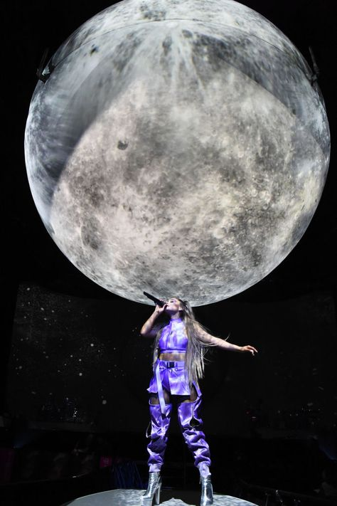
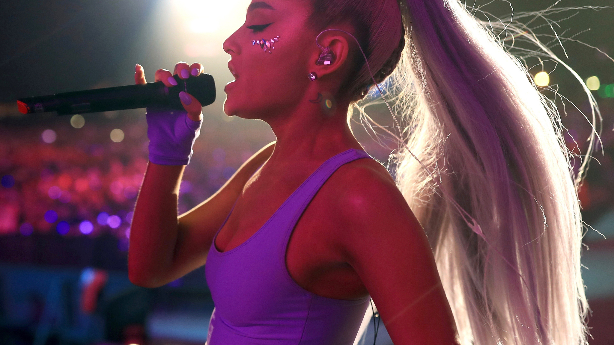
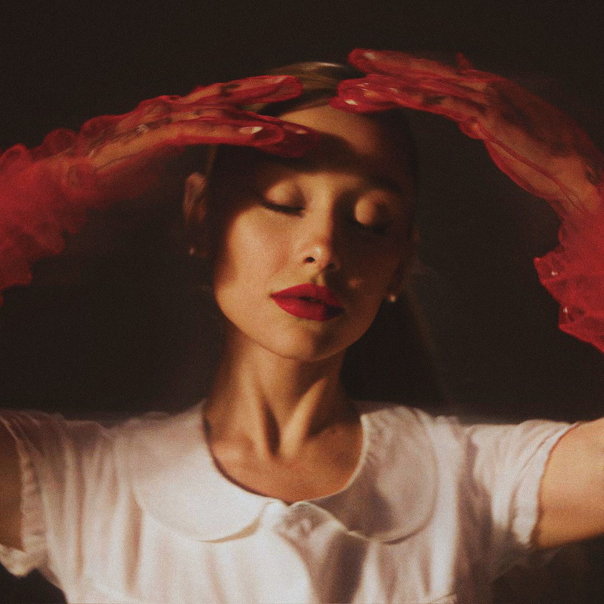

2013
Yours Truly
1950s doo-wop and R&B, a debut that announced a voice beyond her years.
The Way · Baby I · Honeymoon Avenue
Six albums, seven eras, one unmistakable voice. Ariana Grande treats pop as world-building — each era a complete visual universe, from the pink moon of Sweetener to the red haze of Eternal Sunshine.
1950s doo-wop and R&B, a debut that announced a voice beyond her years.
EDM-inflected pop, blockbuster collaborations, a star cementing her place.
Alt-pop and R&B edge, a shift from teen star to commanding artist.
Pharrell's off-kilter production, pastel optimism, and healing after trauma.
Written in weeks, raw and self-assured — a cultural moment and her masterpiece.
Intimate R&B, orchestral flourishes, and lockdown-era vulnerability.
Soft focus, red gloves, and bittersweet clarity — her most cohesive record.
From pop star to Glinda the Good — a Broadway icon reborn on film.
A giant inflatable moon, pink tulle, and a voice that filled arenas. The Sweetener World Tour transformed grief into spectacle — every show a cathedral of light and sound.



Her most sonically cohesive work — soft-focus synths, whispered vocals, and the bittersweet clarity of moving on. Inspired by Eternal Sunshine of the Spotless Mind, it asks: would you erase a love if you could?
After years of speculation, Ariana stepped into the bubble dress of Glinda the Good in Jon M. Chu's film adaptation of Wicked. The role wasn't a departure — it was a culmination. Her voice, always theatrical, found its natural home on the Oz stage.
The film became 2024's highest-grossing movie, earning 10 Oscar nominations including Best Picture — and a Best Actress nod for Ariana herself. Popular, once a Broadway showstopper, became a global pop moment all over again.
The songs that define each era — from doo-wop debut to orchestral pop to Broadway.